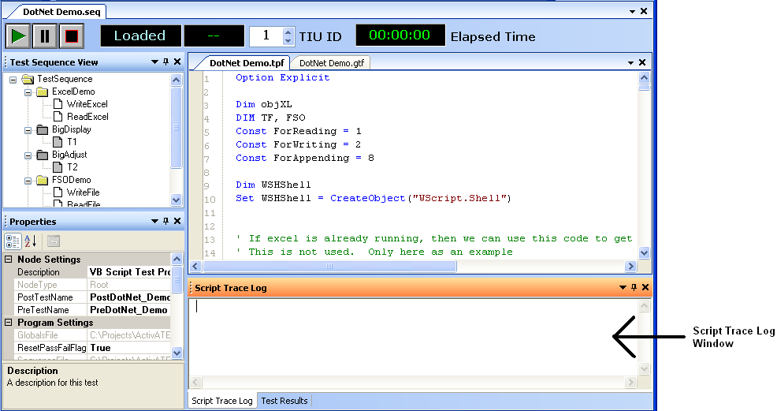

The Script Trace Log Window is used to provide output to the user from both the test program and the ActivATE™ application. By default, it is docked within the lower right corner of the IDE. If the Script Trace Log is not visible, click Script Trace Log from the View menu to bring it back into view.

Error messages will automatically be displayed to the Script Trace Log, as well as the final Pass/Fail notification for the test run. The user also has ability to send output to this window from the test script using the Tracelog object.
If a script error occurs when a test program is run, the error message will be displayed in the Script Trace Log window.
See Also
Script Errors | Using the Tracelog Object
Astronics Test Systems
Last updated on 2/27/07 by L. Anhalt